We translate the verticality of Gothic cathedrals and the harmony of Classical Greek temples into architecture built for how people live today.
Our studio transforms the timeless language of Gothic cathedrals and Classical Greek temples into contemporary architecture that responds to today's cultural, technological, and environmental challenges.
Rather than replicating historical forms, we reinterpret their essence. Verticality, proportion, light, rhythm, and structural clarity become the foundation for spaces that feel both familiar and entirely new.
Each project begins with a careful study of architectural heritage and evolves through modern engineering, sustainable design principles, and refined material selection.
Our philosophy combines craftsmanship, innovation, and contextual thinking — every building is designed to create a lasting connection between people, place, and history.
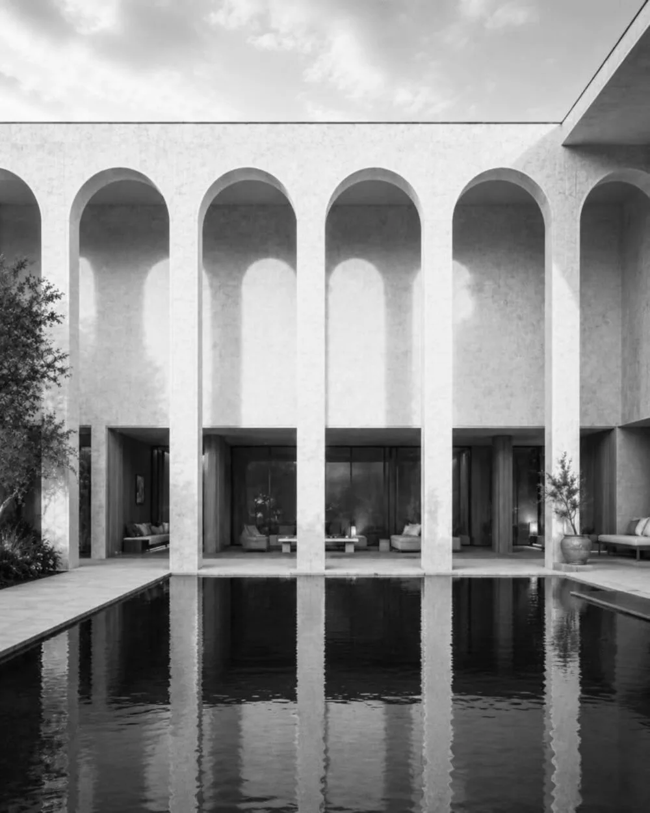
Architecture based on the harmony, proportion, and timeless elegance of Classical Greece.
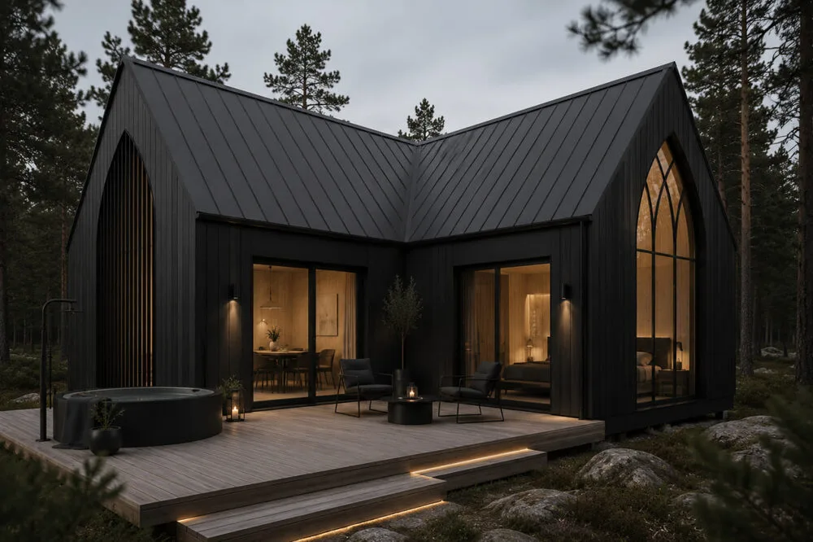
Architecture inspired by Gothic principles of verticality, light, and structural expression.
Specializing in contemporary architecture inspired by Ancient Greece. Focused on harmony, proportion, symmetry, and timeless spatial compositions, translating classical principles into elegant, functional modern buildings.
Passionate about reinterpreting Gothic architecture for the modern world. Focused on vertical compositions, dramatic light, expressive forms, and contemporary materials that preserve the spirit of Gothic design.
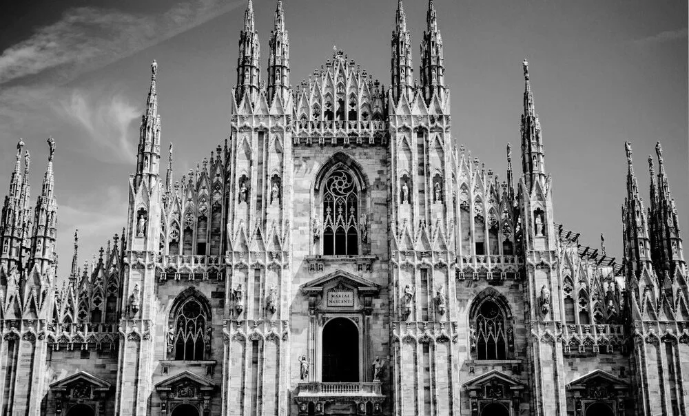
We create architecture that remains relevant beyond trends, drawing inspiration from enduring historical principles.
Rather than copying historical architecture, we reinterpret its spatial qualities for contemporary life.
Every design combines aesthetics with practical, comfortable, and efficient spaces tailored to modern users.
Material quality, attention to detail, and precise execution define every project we create.
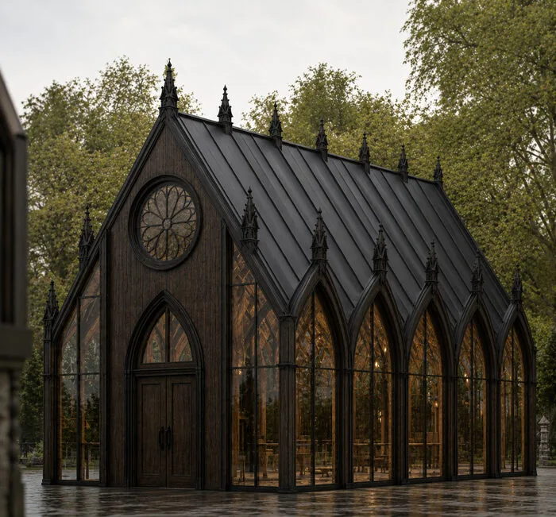
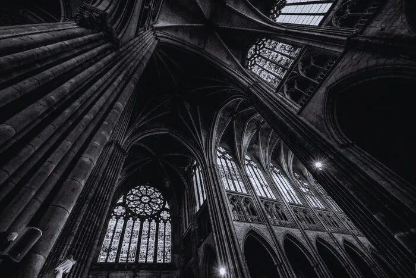
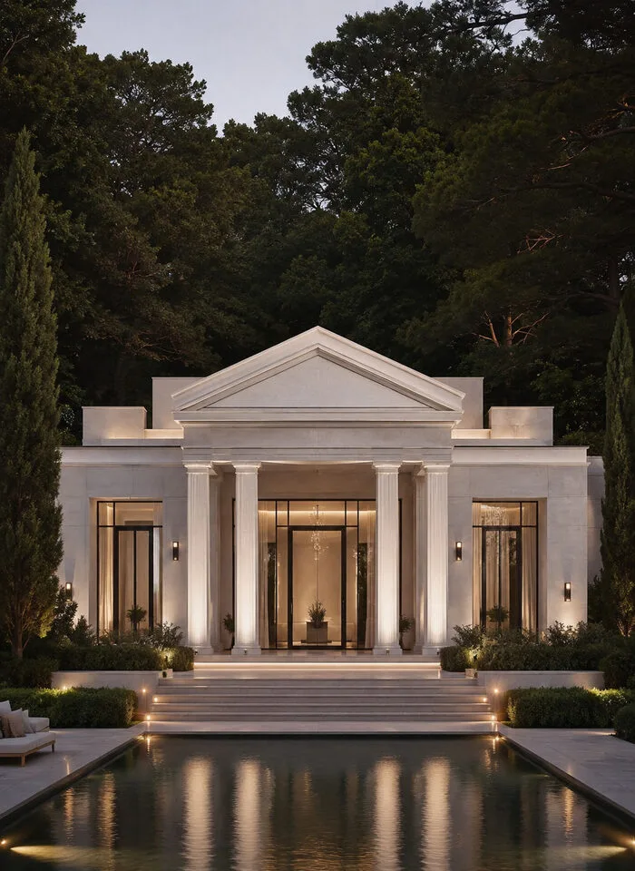
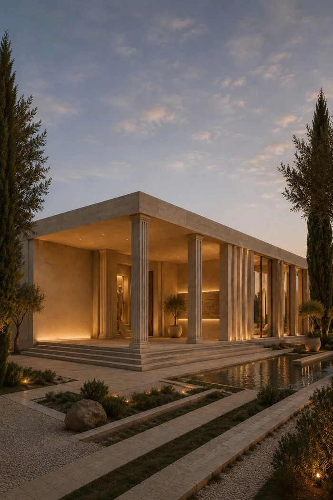
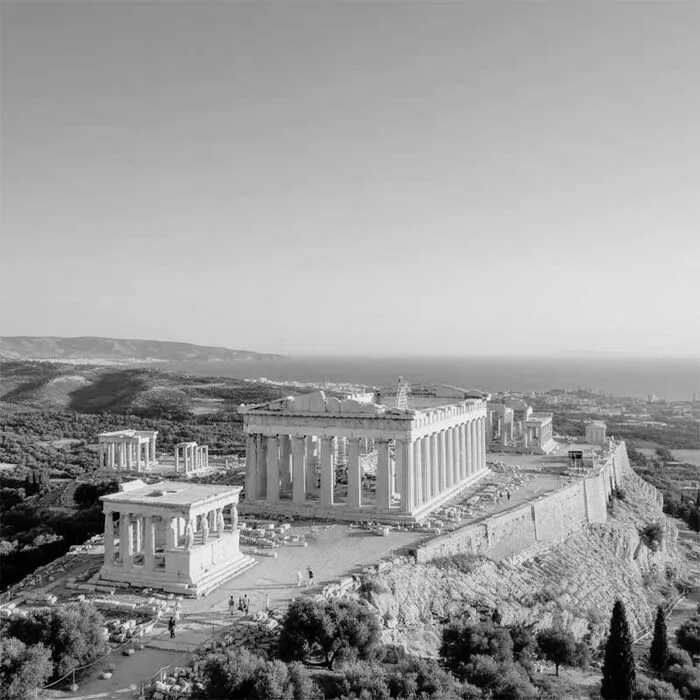
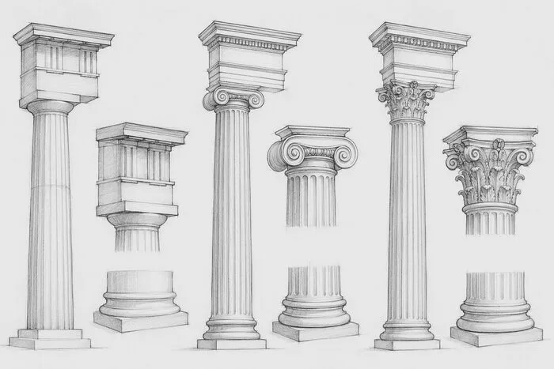
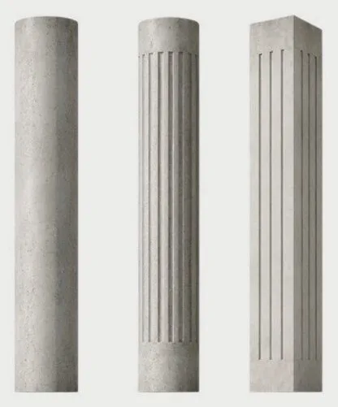
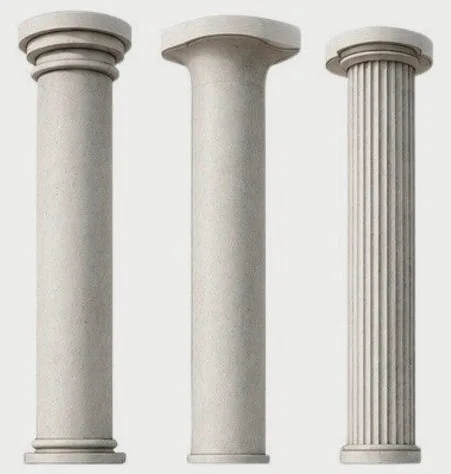
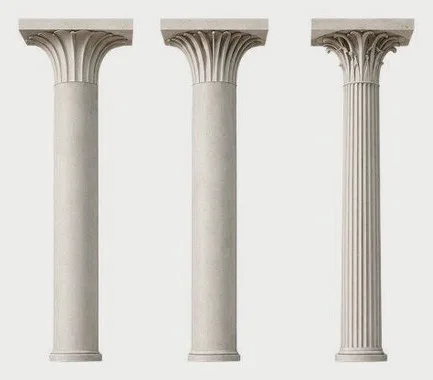
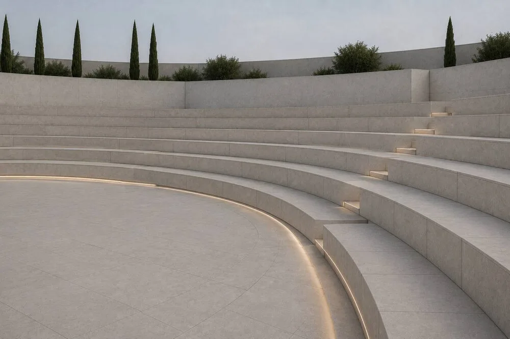
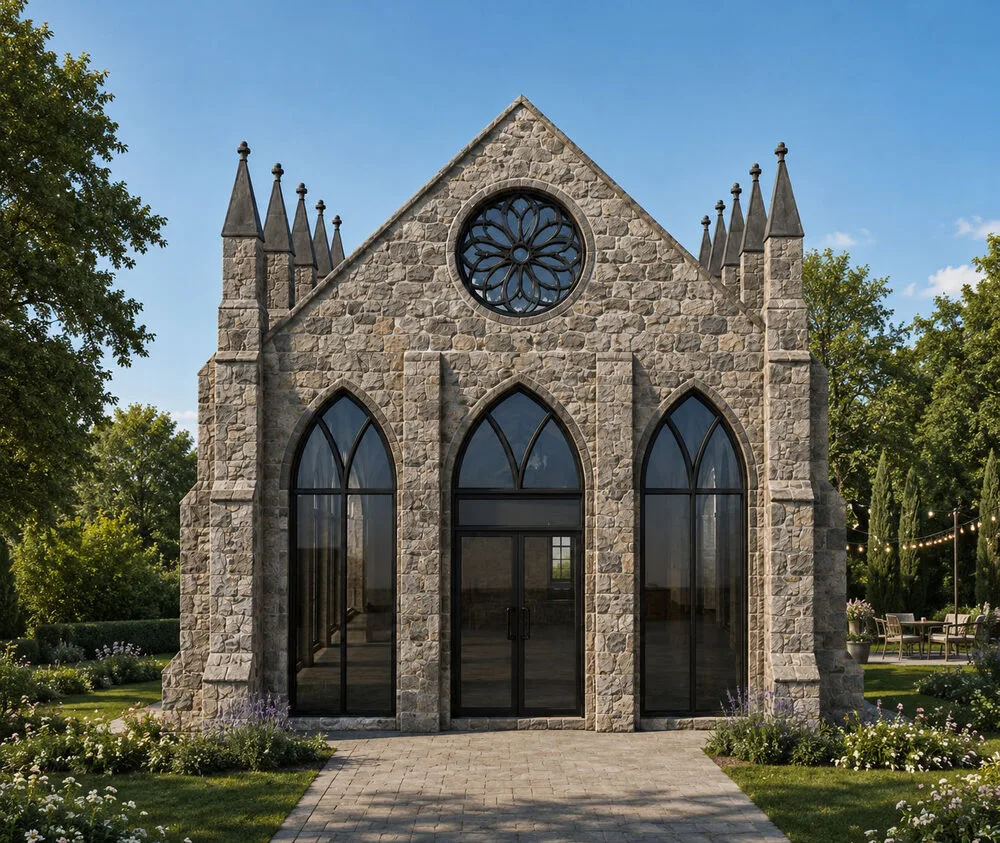
Each project is led by an architect who specializes exclusively in either Contemporary Gothic or Contemporary Greek architecture, ensuring authenticity and design excellence.
We transform historical architectural principles into modern spaces that meet today's functional, technological, and aesthetic requirements.
Every design is developed individually, reflecting the client's vision, lifestyle, and the unique characteristics of the site.
Material quality, attention to detail, and precise execution are non-negotiable across every commission.
Natural lighting, durable materials, and energy-efficient solutions are integrated into every project to create architecture that lasts.
We guide every stage of the project — from concept development and visualization to technical documentation and construction support.
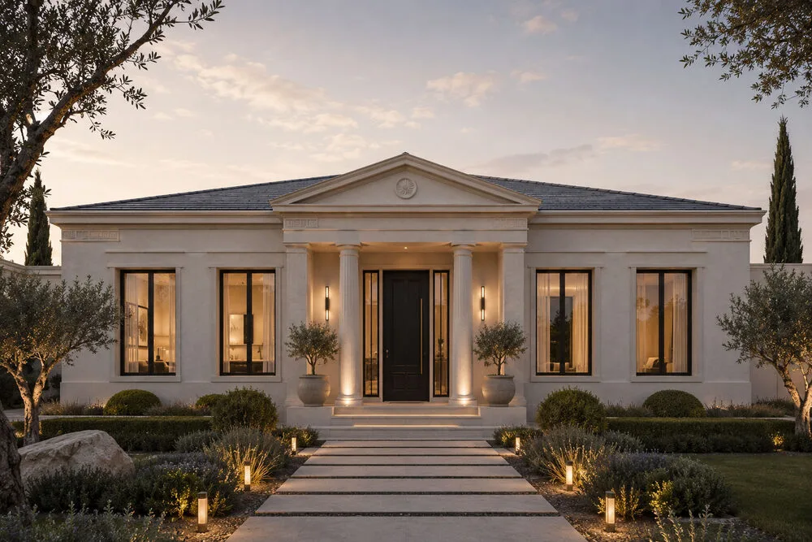
Our vision is to redefine the relationship between historical architecture and contemporary design. We believe timeless architectural principles can inspire innovative spaces that respond to the needs of modern society while preserving the cultural values and aesthetic qualities of the past.
As our studio continues to grow, we aim to create residential, cultural, and public buildings that combine creativity, sustainability, and technical excellence. Every project is an opportunity to transform historical inspiration into architecture that remains relevant for future generations.
We are committed to creating architecture that respects history, embraces innovation, and delivers meaningful spaces designed to inspire people for years to come.